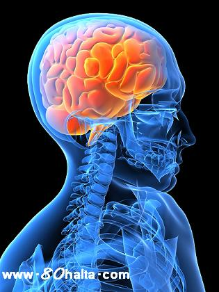

ئالدىنقى يازما
ئالدىنقى يازما كېيىنكى يازما
كېيىنكى يازما
مېڭە يېگىلەش-دېۋەڭلىك كېسىلى ھەققىدە [ياشانغانلار ساغلاملىقى]
ئاپتور:Birzat ۋاقتى:2010-06-17



ئەسسالامۇ ئەلەيكۇم مەن ئاپام ئۈچۈن مەسلىھەت سورىماقچى ،ئاپام بۇيىل 54 ياش . 2يىل بۇرۇن تۇيۇقسىز يېقىلىپ چۈشۈپ
ئاغزى سول تەرەپكە تارتىپ كەتتى،دوختۇرلار مىڭە يىگلەش دەپ دىئاگنوز قويدى.
بىز دوختۇرخانىدا 2ئاي ئەتىراپىدا داۋالاتتۇق ،دوختۇرخاندىن چىققاندىن كىيىنمۇ يىڭنە قويدۇرۇپ،دورا ئېلىپ قىلغاندىن ،سول قول ،سول پۇتتا بەزى ۋاقىتتاماغدۇرسىز بۇلۇپ قالدىغاننى ھىساپقا ئالمىغاندا ،بۇرۇنقى ھالىتىگە قايىتتى.لىكىن بىريىل ئۈتۈپ كەتكەندىن كىيىن ئاپام ئاسانلا ھاياجانلىندىغان،تولا يىغلايدىغان بۇلۇپ قالدى .بىر قېتىم خوشنىلار يوقلاپ كىرىپ چىكەتكەندىن كىيىن ،ئاپام بەك ئۇزۇن يىغلىدى،بىز ئامال قىلالماي قالدۇق ،ئاپام شۇندىن كىيىن تولا يىغلايدىغان بۇلۇپ قالدى،شۇنىڭدىن تارتىپ ئاپامنىڭ ئەستە تۇتۇش قابىليىتى بارغانچە ئاجىزلىشىپ كەتتى.يول مىڭىشىمۇ تەسلىشىپ كەتتى،
بىز يەنە بالنىستا ياتقۇزۇپ داۋالاتقان بولساقمۇ ،ياخشىلىنىشتىن تۈگۈل ئەكسىچە تېخىمۇ ناچارلىشىپ كەتتى.(ئاپام دوختۇرخانىدا داۋالىنۋاتقاندا ،مۇشۇ ياتاقتىكى بىر ئايالنىڭ يۈرەك كېسىلى قوزغىلىپ ئۈلۈپ كىتىپتىكەن. ئاپام بۇنىڭدىن قورقۇپ كىتىپتىكەن شۇنىڭدىن بىرى كەم سۆز بۇلۇپ كەتتى.)
بىز ئامالسىز ئاپامنى ئۆيگە ئەچىقىپ كەتتۇق ، ئۆيگە چىققاندىن كىيىن ئاپمنىڭ ھالىتى سەل ياخشىلاندى.
لىكىن بۇيىل 3-ئايدا قاتتىق بىر يىغلىغان بانا بىلەن ئەھۋالى ئېغىرلىشىپ كەتتى.
بىز بىر قانچە دوختۇرنى تەكلىپ قىلىپ ئاپامنىڭ كېسىلنى كۆرسەتكەن ،ئۇلار دورا يىزىپ بەردى ،ئاپام بۇدورىلارنى يىگەندە دەسلەپتە پايدا قىلغاندەك قىلغان بىلەن .ئۈنۈمى كۆرىلمىدى.
ئاپامنىڭ ھازىرقى ھالىتى ،تامىقى ياخشى،قولتىقىدىن تۇتۇپ ھىمايە قىلسا ،ئۆزى 10مىتىر ئارلىققا چامداپ ماڭالايدۇ.بەك كەم سۆز ،بىز توختىماي سۇئال سوراپ تۇرساقسۇ ،بەك كەم سۆز.
كەچلىك ئۇيقۇسى ياخشى،لىكىن نىمە بولدىكىتاڭ 3ئايدەك بولدى ،<<ۋويجان>> دەپ يۇقىرى ئاۋازدا ۋارقىرىيدىغان بۇلۋالدى،دوخـتۇر تەكشۈرۈپ ئىچى پۇشۇپ ۋارقىرايدىغان ئوخشايدۇ دەيدۇ.
ئادەتتە ئاپامنىڭ يېنىدىن ئادەم ئايرىلمايدۇ.ئاپام بىرلا ۋاقىرسا 5-10-مىنۇقىچە توختىماي ۋارقىرايدۇ.
ئۇنىڭ ئۈستىگە تەرىتىنى ئۇقمايدۇ،
ئەمدى مىنىڭ سورىماقچى بولغىنىم ،مىڭە يىگىلەشنى داۋالايدىغان ئۈنۈملۈك ئۇسۇل پەقەتلا يوقمۇ؟
ئەگەر بار بولساقەيەردە ، قانداق داۋالايدىغانلىقىنى ئېيتىپ بەرگەن بولسىڭىز؟
ئاپامنىڭ ۋاقىرشىغا قارىتا بىز خېلە كۈچىگەن بولساقمۇ ئامال قىلالماي قالدۇق سىزنىڭ ياخشى ئۇسۇلىڭىز بارمۇ؟ بولسا مېڭە يىگىلەش ،مېڭە يېگىلەشنىڭ ئالدىنى ئېلىش توغرىسىدا تەپسىلىي چۈشەنچە بەرگەن بولسىڭىز.
جاۋاب: ۋە ئەلەيكۇم ئەسسالام:
مىڭە يىگىلەش كېسىلى _ ئادەتتە ياشانغانلاردا بولىدىغان دىۋەڭلىك كىسىلى دەپمۇ ئاتىلىدۇ، بۇ خىل كىسەللىك ئادەتتە مىڭە ھۈجەيرىلىرىنىڭ قان بىلەن تەمىنلىنىشى يىتەرلىك بولماسلىق ياكى مەلۇم بىر دائىرە ئىچىدە قان بىلەن تەمىنلىنەلمەسلىك (قان نوكچىسى شەكىللىنىش، قان تومۇرلار توسۇلۇپ قېلىش، يۇقىرى قان بېسىم سەۋەبىدىن مىڭىگە قان چۈشۈش ) سەۋەبىدىن پۈتۈن مىڭە ياكى مىڭىنىڭ مەلۇم قىسملىرى يىگىلەپ، شۇنىڭغا ماس ھالدا ئومۇمى بەدەن خىزمىتىدە ئاستا خاراكتىرلىق، تەدرىجى ئېغىرلايدىغان چېكىنىش كۆرۈلىدۇ . يەنى ھەركەت قىلىش ئىقتىدارى تەدرىجى تۆۋەنلەش، بارا بارا ھەركەت قىلالماسلىق، بارا بارا چوڭ كىچىك تەرەتلىرىنى ئۇقالماسلىق ئەھۋاللىرى كۆرۈلىدۇ . ئاسان ئاچچىقلايدىغان، بىرسىدىن ئىتتىك رەنجىيدىغان، بولۇپمۇ يېقىن كىشىلىرى پەرزەنتلىرىدىن دائىم ئاغرىنىدىغان بوولۇپ قالىدۇ. دىققىتىنى يىغالمايدۇ، ئۇنتۇغاق بولۇپ قالىدۇ. بولۇپمۇ يېقىنقى مەزگىلدە يۈز بەرگەن ئىشلارنى ئاسان ئۇنتۇپ قالىدۇ، ئەمما بۇرۇنقى ئىشلار ئېسىدە تۇرىدۇ. بەزىدە بىر خىل ھەركەتنى قايتا قايتا تەكرارلايدۇ.
بۇ خىل كىسەللىك ئېغىرلاشقاندا گەپ سۆز قىلىش ئىقتىدارى، مىڭىنىڭ تەپەككۇر قىلىش .ىقتىدارى ئېغىر توسالغۇغا ئۇچرايدۇ.
كىلىنىكىدا بۇ خىل كىسەللىكنىڭ ئۈنۈملۈك دورىسى يوق، بەزى مىڭە قان تومۇرلىرىنىڭ قان ئايلىنىشىنى ئىلگىرى سۈرىدىغان دورىلار بىلەن كىسەلنىڭ ئېغىرلاپ كىتىشىنىڭ ئالدىنى ئېلىش مۇمكىن.
ئۇنىڭدىن باشقا كىسەل كىشى بىلەن كۆپرەك پاراڭلىشىش، بۇرۇنقى ئۆزى ئېسىدە تۇتالىغان ئىشلارنى قايتا قايتا ئەسلىتىش، كىتاب ئوقۇپ بېرىش، مۇزىكا ئاڭلىتىش، قۇرئان ئوقۇپ بېرىش ، ۋە ئۆزى بىلىدىغان قۇرئان سۈرىلىرىنى ئوقۇشقا ئىلھاملاندۇرۇش ۋە تەڭ ئوقۇپ بېرىش قاتارلىقلارنىڭ كىسەلنىڭ ياخشىلىنىشىغا ياردىمى بولۇش مۇمكىن.
___________________ سەفىيە

 يازما مەنبەسى: بېكەت ئەسىرى
يازما مەنبەسى: بېكەت ئەسىرى خەتكۈش:
خەتكۈش:  مۇناسىۋەتلىك يازمىلار:
مۇناسىۋەتلىك يازمىلار:
ئىنكاس: 1 | نەقىل: 0 | كۆرۈلگىنى: -
 قايتۇرما
قايتۇرما ]
]ئەسسالامۇ ئەلەيكۇم ھۆرمەتلىك بىر زات ئەپەندىم، مەن ئاپام توغرۇلۇك مەسلسھەت سورىماقچى ئىدىم ،يول كۆرسىتىشىڭىزنى ئۈمۈت قىلىمەن. ئاپام ئۇزۇندىن بېرى بېقىنىم ئاغرىدى دەپ تەكشۈرۈتكەن ئىدۇق ئۆتتە تاش باركەن دىدى، قاندىكى شېكەرنىڭ مىقدارى 11 چىقىپ قالدى، ئۆتنى ئوپىراتسىيە قىلىپ ئالدۇرىۋېتەيلى دىسەك ئالدى بىلەن قاندىكى شېكەرنى چۈشۈرۈش كېرەك ئىكەن . لېكىن ئاپامدا ھازىرچە دىئابىت كېسەللىەىنىڭ ئالامەتلىرى يوق،شېكەرنى چۈشۈرۈش ئۈچۈن ئىنسۇلىن ئىشلىتىش كېرەكمۇ ياكى باشقا دورىلارمۇ بارمۇ؟ ئاپام سەل سېمىز ئىدى، ئېگىر كۆرمەي توغرا مەسلىھەت كۆرسەتكەن بولسىڭىز.
ئىنكاس يوللاش